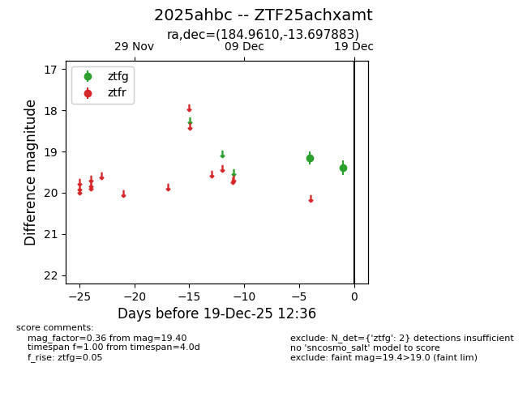
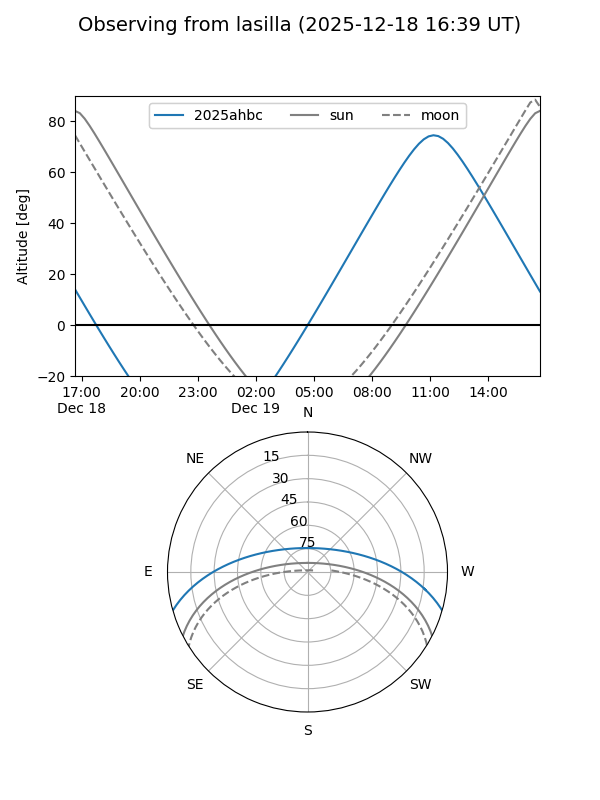
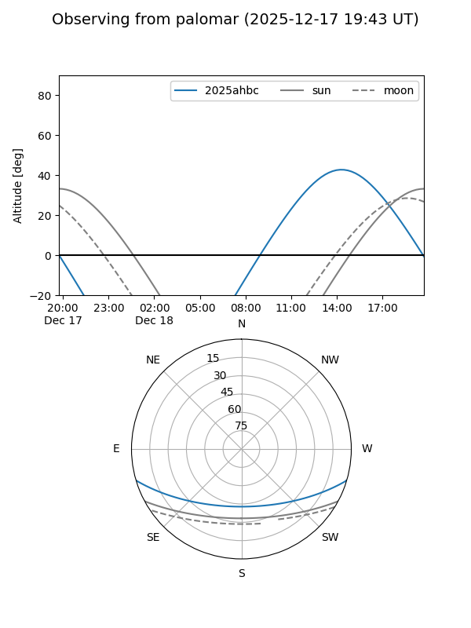

2025ahbc
Target 2025ahbc at 2025-12-31 16:59
Aliases and brokers:
FINK:
Lasair:
ALeRCE:
TNS:
YSE:
alt names
ZTF25achxamt (ztf,fink_ztf)
2025ahbc (tns,yse)
Coordinates:
equatorial (ra, dec) = 184.9610,-13.69788
equatorial (HMS+DMS) = 12:19:50.63,-13:41:52.38
galactic (l, b) = (291.3172,+48.46007)
Flags:
Photometry:
last ztfg=19.73
3 ztfg detections
Lightcurve

Visibility


Additional plots